You are probably accustomed to measuring angles in degrees. We hope to convince you that radian measure actually is much more natural. It doesn’t feel natural to you at first simply because it is new and unfamiliar.
Suppose two children ride on a merry–go–round through an angle \(\theta\text{,}\) one child is \(2\) meters from the center, the other \(4\) is meters from the center. However we choose to measure the angle \(\theta\text{,}\) it is pretty clear that the child who is \(4\) meters away from the center will travel farther than the child who is \(2\) meters away from the center, even though both of their paths have swept out the same angle, \(\theta\text{.}\)
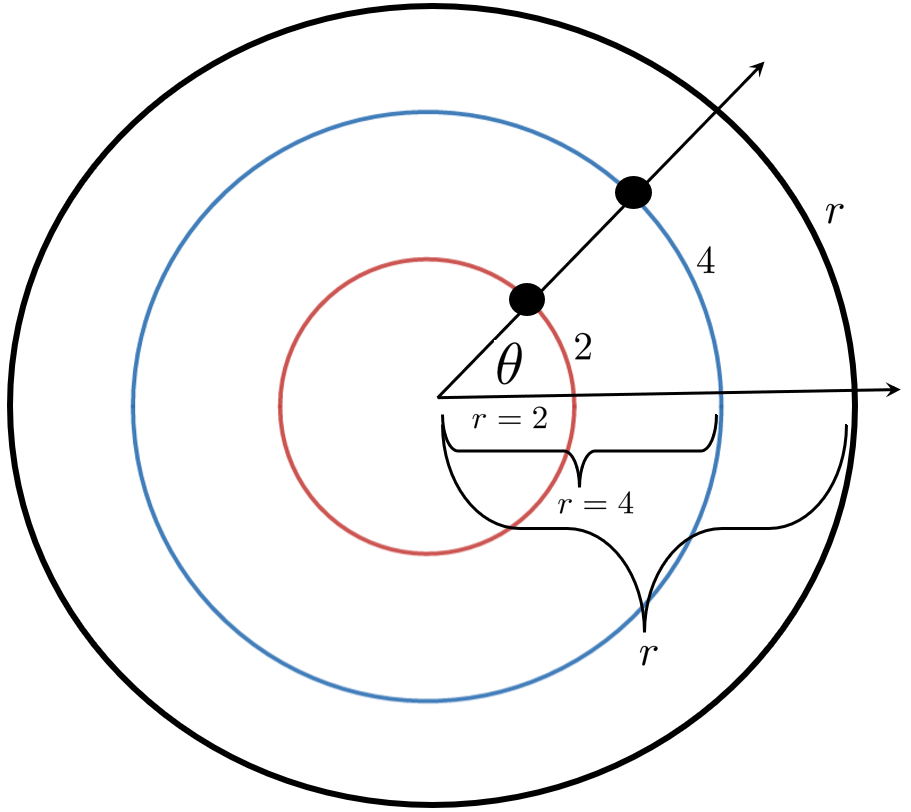
Figure6.1.1.
This tells us is that the distance traveled for a fixed angle along a circle will be proportional to the radius of the circle. To find the actual distance traveled is harder as the following drill shows.
Problem6.1.2.
(a)
Now suppose \(\theta=57^\circ\text{.}\) Use the sketch above to show that the first child travels slightly less than \(2\) meters along the red circle while the second travels slightly less than \(4\) meters along the blue circle.
(b)
Why do you suppose we chose \(\theta=57^\circ\) rather than something more familiar like \(\theta=45^\circ\) or \(\theta=30^\circ\text{?}\) It seems an odd choice, doesn’t it?
Hint.
If we travel \(57^\circ\) around a circle, what fraction of the circumference of the circle have we traversed?
Problem 6.1.2 was not particularly hard, but it was complicated by the use of degree measure. Radian measure removes that complication.
If on a circle with radius \(2\) meters, like the red circle in the Figure 6.1.1, we trace out a circular arc equal to the length of its radius we say that the arc–length is \(2\) meters. If we trace out a distance equal to the length of its radius on the blue circle then this is an arc–length of \(4\) meters.
But notice that the same central angle subtends both of these arcs. We define the measure of this angle to be one radian because it is the angle associated with a single radius. An angle of two radians is thus the angle subtended when we measure out an arc length two times the radius of the circle.
In general we have the following result:
\begin{equation*}
\text{arclength }=(\text{length of radius})\times(\text{number of
radians in }\theta).
\end{equation*}
More succinctly, if we let \(s\) represent the arclength and measure \(\theta\) in radians we have
In Problem 6.1.2, if we had measured \(\theta\) in radians rather than degrees, the computations for each of the arclengths would be \(s=2\theta\) (when \(r=2\)) and, \(s=4\theta\) (when \(r=4\)). We chose an angle of \(57^\circ\) because \(57^\circ\) is slightly less than an angle of one radian. So we know that the first child traveled slightly less than the radius, \(2\) meters. Similarly the second child traveled slightly less than \(4\) meters.
Rather than constantly translating between degrees and radians it will be simplest if you learn to think in radians directly. You should start trying to do that immediately. But breaking old habits is difficult so we need to see how to convert between them. Fortunately this is not hard.
Since the circumference of a circle is \(2\pi r\text{,}\) one full transit around the circle subtends an angle of \(2\pi\) radians. In degrees, a full circle is \(360^\circ\text{,}\) so we have
Thus, as we mentioned earlier, \(1\text{ radian}=(180^\circ)/\pi\approx57.296^\circ\text{.}\)
You may find it simpler to just remember that \(2\pi\) radians is one full rotation around a circle, so \(\pi\) radians (a straight angle) is halfway around a circle, and a right angle is half of that, (\(\pi/2\) radians). Three quarters of the way around a circle would thus be \(\pi+\pi/2=3\pi/2\) radians, etc.
Use whatever works for you, but do start thinking in radians rather than degrees as quickly as you can. It will make what’s coming up easier for you.
We adopt the custom that positive angles are counterclockwise and negative angles are clockwise.
Problem6.1.3.
For each angle, determine the number of revolutions and direction around the circle. Do not convert to degrees first.
(a)
\(45\pi\) radians
(b)
\(-\frac{7\pi}{2}\) radians
(c)
\(-\frac{20\pi}{3}\) radians
Problem6.1.4.
Find the radian measure of each angle described. Do not convert to degrees first.
(a)
\(\frac16\) of a circle in the positive direction.
(b)
\(\frac56\) of a circle in the negative direction.
(c)
Twice around the circle in the positive direction.
(d)
\(\frac78\) times around the circle in the negative direction.
(e)
\(\alpha\) times around the circle where \(\alpha\) can be any real number.
So far in this chapter we’ve only considered static angles. If an object is moving in a circle as in Figure 6.1.1 then the rate of change of the central angle is called the angular velocity.
Angular velocity is \(\dfdx{\theta}{t}\text{,}\) the rate of change of the central angle, \(\theta\) with respect to time. Of course the object still has both a vertical velocity, \(\dfdx{y}{t}\) and a horizontal velocity, \(\dfdx{x}{t}\text{.}\)
measures how fast our object is revolving about the point \(O\) in the positive (counterclockwise) direction. The sign of angular velocity indicates its direction: Positive means counterclockwise and negative means clockwise. The absolute value of the angular velocity, \(\abs{\dfdx{\theta}{t}}\text{,}\) is the angular speed.
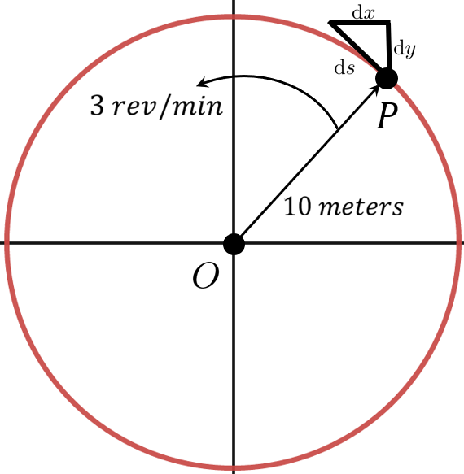
As we saw in Section 5.7 the velocity in the direction of motion is denoted, \(\dfdx{s}{t}\) where the length of \(\dx{s}\) is the (infinitesimal) hypotenuse of the differential triangle in our diagram. Thus \(\dfdx{s}{t}\) denotes the linear velocity of the object. Because \(\dx{s}\) is tangent to the path of the object, \(\dfdx{s}{t}\) is also called the tangential velocity.
The direction of the linear velocity is the direction the object is moving as it passes through the point \(P\text{,}\) but notice that the direction cannot be specified with a plus or a minus because the object can travel in more than two directions. During a single circumnavigation the object is traveling in a different direction at every point in its path.
We will continue to use the symbol \(\dfdx{s}{t}\) to denote the tangential velocity. But be aware that this a rather clumsy notation because it doesn’t provide a simple way to indicate the direction of travel. This deficiency in our notation will eventually need to be addressed. For now we will be primarily be interested in the linear (tangential) speed: \(\abs{\dfdx{s}{t}}\text{.}\)
The tangential speed tells us how fast the object would move in a straight line if the force holding it in a circular path were suddenly released — think of an object swinging on a string if the string breaks.
Conversion from angular velocity to linear speed is essentially a change of units, but we need to remember that velocity has direction and speed does not. So we must first convert angular velocity to angular speed by taking its absolute value. In our diagram above the angular velocity of the point \(P\) about the point \(O\) is \(\frac13 \frac{\text{revolutions}}{\text{minute}}\text{.}\) We compute the linear speed of \(P\) as follows:
In the computation above the absolute value was superfluous since the angular velocity was positive. However if the object were traveling clockwise it would have been essential to take the absolute value first because a negative speed is meaningless.
Problem6.1.5.
Suppose a point \(P\) is revolving in a circle with angular velocity \(\dfdx{\theta}{t}\text{.}\) For each situation find the linear speed of the point in the units indicated.
(a)
Find the linear speed of \(P\) in \(\frac{\text{meters}}{\text{second}}\) if \(r=5\) meters and \(\dfdx{\theta}{t}=2 \frac{\text{radians}}{\text{second}}\text{.}\)
(b)
Find the linear speed of \(P\) in \(\frac{\text{centimeters}}{\text{second}}\) if \(r=3\) centimeters and \(\dfdx{\theta}{t}=720 \frac{\text{degrees}}{\text{minute}}\text{.}\)
(c)
Find the linear speed of \(P\) in \(\frac{\text{centimeters}}{\text{second}}\) if \(r=7\) feet and \(\dfdx{\theta}{t}=720 \frac{\text{degrees}}{\text{hour}}\text{.}\)
Notice that the units are mixed in this problem.
(d)
Find the linear speed of \(P\) in mph (miles per hour) if \(r=4000\) miles and \(\dfdx{\theta}{t}=1 \frac{\text{revolution}}{\text{day}}\text{.}\)
(This problem describes a physical phenomenon you see daily. Can you identify it?)
(e)
Find the linear speed of \(P\) in mph if \(r=238,900\) miles and \(\dfdx{\theta}{t}=\frac{1}{28}
\frac{\text{revolution}}{\text{day}}\text{.}\)
(This problem describes a physical phenomenon you see monthly. Can you identify it?)
(f)
Find the linear speed of \(P\) in mph if \(r=93,496,000\) miles and one revolution is completed every \(365\) days, \(5\) hours, \(59\) minutes, and \(16\) seconds.
(Can you identify the physical phenomenon this problem represents?)
(g)
Our sun appears to revolve around the earth once per day. If that were actually happening, what would the sun’s linear speed need to be in miles per second? Assume that the distance from the sun to the earth is \(93\) million miles.
Subsection6.1.2The Trigonometric Functions
You are probably most familiar with right triangle Trigonometry, where the functions are defined in terms of the sides of a triangle. This is the simplest way to introduce these functions but historically Trigonometry emerged from the geometry of a circle. Ancient astronomers found it useful to have a Table of Chords (Lengths) to refer to. A chord is the line segment that cuts off part of a circle.
In Figure 6.1.6 we see that \(\sin\left(\frac{\theta}{2}\right)\) is the length of the half chord.
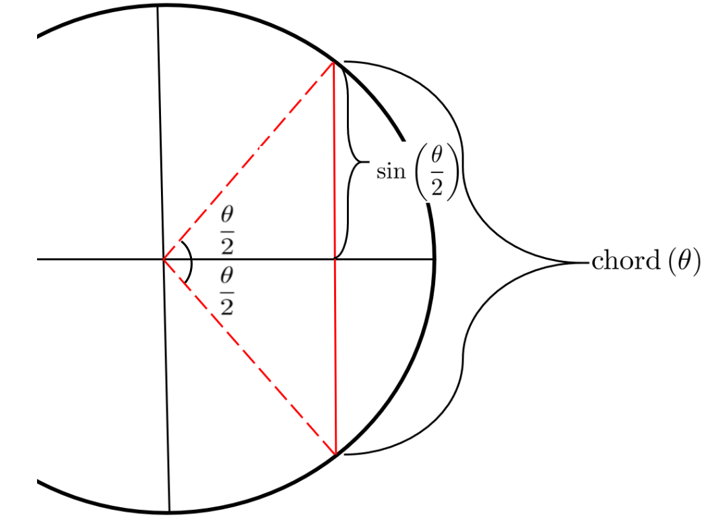
Figure6.1.6.
The name of the sine function has a colorful history. In The Words of Mathematics, Steven Schwartzman explains:
In dealing with spherical trigonometry used to study astronomy, Hindu mathematicians determined that it was often convenient to deal with half–chords. The Hindu mathematician Aryabhata 2
(476–550 AD) frequently used the abbreviation jya for the word jya–ardha (half chord). This was phonetically translated into jiba by subsequent Arabic mathematicians. Since Arabic is written without vowels then this was written as jb. When Arabic works were translated into Latin, jb posed a problem as there is no such word as jiba in Arabic (recall it was translated phonetically). The closest ‘real’ Arabic word is jaib which means ‘cove’ or ‘bay.’ The Latin word for this is sinus which becomes our modern sine.
Because the two acute angles, \(\theta \) and \(\theta \text{,}\) in a right triangle in the figure below are complementary (they add up to \(\pi/2 \text{
radians}\) or \(90^\circ\)) we see that the term cosine actually makes sense. It is an abbreviation for “complement’s sine.”
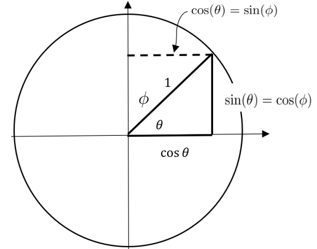
Etymology also helps to explain where the names of the other trigonometric functions came from. When \(0\le\theta\le\frac{\pi}{2}\) the sine, tangent, and secant functions can be represented as the length of a particular line segment and their names are descriptive of these segments. Let \(0\le\theta\le\frac{\pi}{2}\) be an angle in standard position (with its vertex at the origin and its initial side along the \(x\)–axis). On the positive \(x\)-axis mark off the line segment \(OA\) that is \(1\) unit long. On the terminal side of the angle, mark off the line segment \(OB\) so that the line segment \(AB\) is tangent to the unit circle. Then the length of the tangent line segment \(\overline{AB}\) is \(\tan(\theta)\text{,}\) while the length of the other line segment \(\overline{OB}\) is \(\sec(\theta)\text{.}\) All of this is depicted in the sketch below As we’ve already seen the word “tangent” comes from the Latin tangere meaning “to touch.” Similarly the word “secant” comes from the Latin secare meaning “to cut.”
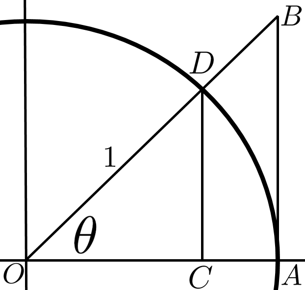
The “co” prefix in front of the other trig functions is an abbreviation of the the word “complement”. The six trigonometric functions are thus the sine (\(\sin\)), cosine (\(\cos\)), tangent (\(\tan\)), cotangent (\(\cot\)), secant (\(\sec\)), and cosecant (\(\csc\)).
Problem6.1.7.
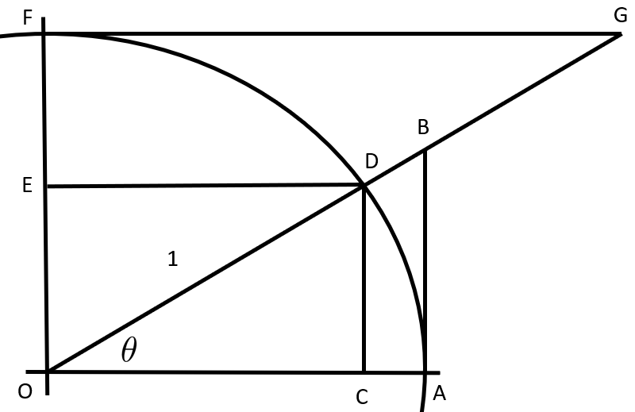
In the diagram above arc \(ADF\) is the unit quarter–circle in the first quadrant.
(a)
For the angle \(\theta\) on the diagram above match the trigonometric function value with the appropriate line segment.
\(\displaystyle \sin(\theta)\)
\(\displaystyle \cos(\theta)\)
\(\displaystyle \tan(\theta)\)
\(\displaystyle \cot(\theta)\)
\(\displaystyle \sec(\theta)\)
\(\displaystyle \csc(\theta)\)
(b)
You may have wondered why secant is the reciprocal of cosine and not sine. Use the diagram, similar triangles, and the observation that \(\overline{OD}=\overline{OA}=1\) to show that
Since the cotangent and cosecant literally mean “complement’s tangent” and “complement’s secant” we also have \(\cot(\theta)=\frac{\cos(\theta)}{\sin(\theta)}\) and \(\csc(\theta)=\frac{1}{\sin(\theta)}\text{.}\)
Problem6.1.8.
Use a unit circle to illustrate and explain the following identities:
(a)
\(\sin^2(\theta)+\cos^2(\theta)=1\)
(b)
\(\tan^2(\theta)+1=\sec^2(\theta)\)
(c)
\(\sin(-\theta)=-\sin(\theta)\)
(d)
\(\cos(-\theta)=\cos(\theta)\)
(e)
\(\sin(\theta+\pi)=-\sin(\theta)\)
(f)
\(\cos(\theta+\pi)=-\cos(\theta)\)
When we graph the points \((\theta,\sin(\theta))\) we get the “sine wave.” This follows from the fact that on a unit circle the radian measure of a central angle, \(\theta\text{,}\) is equal to the length of the arc it cuts. So we get the “sine wave” when we roll the arc length out as a straight line on the \(x\)–axis.
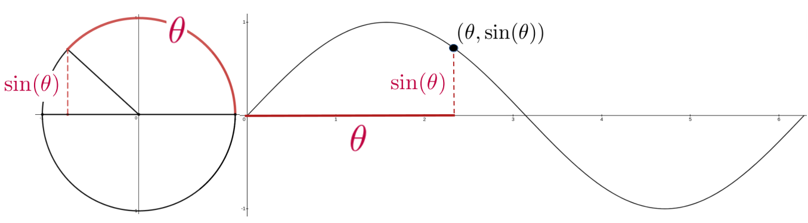
Notice that as the angle (arc) sweeps around the unit circle from \(0\) to \(2\pi\text{,}\) the graph of \(\sin(\theta)\) cycles from \(0\) (at \(\theta=0\)), to \(1\) (at \(\theta=\pi/2\)), to \(0\) (at \(\theta=\pi\)), to \(-1\) (at \(\theta=3\pi/2\)), and back to \(0\) (at \(\theta=2\pi\)).
Problem6.1.9.
A similar development gives us the graph of \(x=\cos(\theta)\text{.}\)
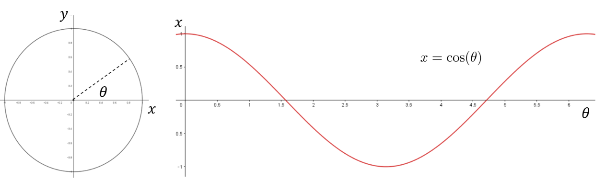
Use the diagram above to explain why the cosine cycles from \(1\text{,}\) to \(0\text{,}\) to \(-1\text{,}\) to \(0\) to \(1\text{.}\) for \(0\le \theta\le 2\pi\text{.}\) What are the precise values of \(\theta\) where the cosine takes on those values?
Subsection6.1.3Modeling with Trigonometric Functions
The sine and cosine functions are periodic functions. As such they are useful for modeling phenomena which are cyclical in nature; that is, phenomena which repeat the same pattern periodically. This periodicity is reflected in the formulas:
The rationale for the term periodic is very evident when we graph \(\sin(\theta)\) on a set of \((\theta, y)\) axes.
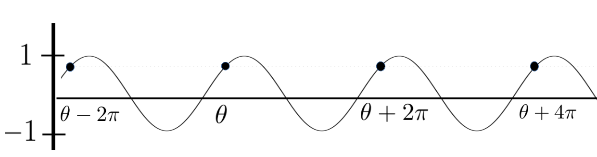
As you can see a full cycle is completed over every interval of length \(2\pi\text{.}\) Thus the sine and cosine functions are said to be \(2\pi\)–periodic. We can start our cycle for any value of \(\theta\text{,}\) but you are probably accustomed to graphing one complete cycle over the interval \([0,2\pi]\) as in the graphs below.
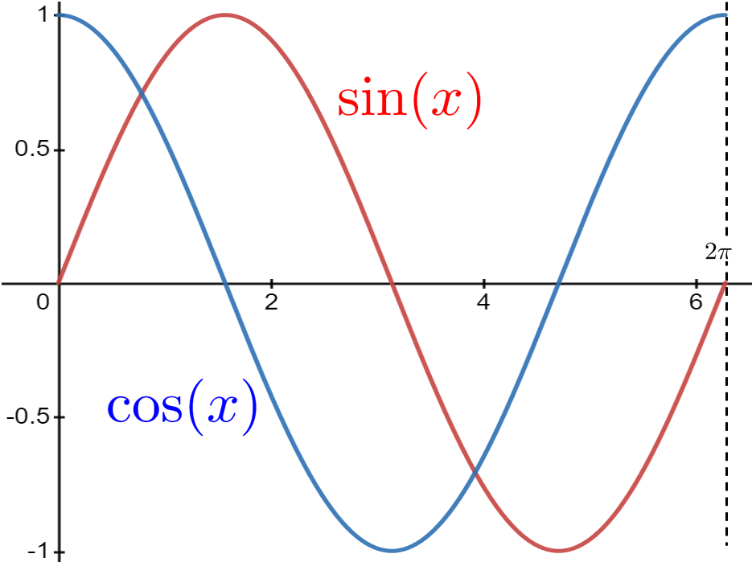
Problem6.1.10.
Because \(\sin(t)\) and \(\cos(t)\) complete one cycle on an interval of \(2\pi\) they are called \(2\pi\)–periodic functions. Suppose that \(A\text{,}\)\(B\text{,}\) and \(C\) are constants. Choose several non–zero values for \(A\text{,}\)\(B\text{,}\) and \(C\) (at least three of each) and graph the function
to show graphically that \(z(t)\) is also a \(2\pi\)–periodic function.
Notice that on any interval of length \(2\pi\) the function \(y=\sin(\theta)\) takes on every possible value between \(-1\) and \(1\text{,}\) so the amplitude of this sine wave is \(1\text{.}\) Changing the amplitude of a periodic function is easy. If we want an amplitude of \(5\) then we just multiply by \(5\text{:}\)\(y=5\sin(\theta)\text{.}\) This new function will oscillate between \(-5\) and \(5\text{.}\)
If we are modeling some real–world phenomenon then the amplitude will correspond to some physical attribute of the phenomenon. For example increasing the amplitude of a sound wave will increase the volume of the sound.
The sinusoidal axis is the horizontal line in the center of the range. So, for \(y=\sin(\theta)\) the sinusoidal axis is horizontal axis (\(y=0\)) because the graph of \(y=0\) is at the center of the range \(-1\le y\le1\text{.}\) Likewise the horizontal axis is the sinusoidal axis for \(y=5\sin(\theta)\text{.}\) But if we have \(y=3+5\sin(\theta)\text{,}\) this would shift the sinusoidal axis to the line \(y=3\text{,}\) because this line would be at the center of the range and the wave would oscillate between \(3-5=2\) and \(3+5=8\text{.}\)
Problem6.1.11.
Suppose we had a sinusoidal wave oscillating between \(-4\) and \(12\text{.}\) What would be the amplitude and what would be the sinusoidal axis of this wave?
Example6.1.12.
The pitch of a sound wave is regulated by how fast the wave is oscillating. Faster oscillations mean higher pitches. Suppose we want a wave that oscillates once per second. Our base function, \(y=\sin(\theta)\text{,}\) oscillates once over the interval \(0\le \theta\le2\pi\text{.}\) Divide \(\theta\) by \(2\pi\text{,}\) so that we have one oscillation occurring when \(0\le \frac{\theta}{2\pi}\le 1\text{.}\) If we let \(t=\frac{\theta}{2\pi}\) so that \(\theta=2\pi t\) then \(y=\sin(2\pi t)\) oscillates at a rate of one cycle per second as in the following graph.
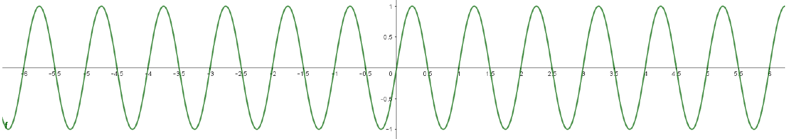
Now suppose we want to double the frequency to \(2\) oscillations per second. Again our base function \(y=\sin(\theta)\) oscillates once for \(0\le \theta \le 2\pi\text{.}\) We want two oscillations per second or one oscillation per half second. So, we want \(0\le\frac{\theta}{4\pi}\le \frac12\text{.}\) Letting \(t=\frac{\theta}{4\pi}\) we see that \(y=\sin(4\pi t)\) oscillates once every half second (or twice every second) as in the following graph.
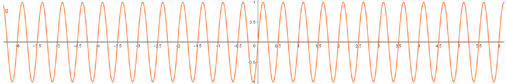
The number of cycles per second is referred to as the number of Hertz (Hz). So \(y=\sin(2\pi t)\) oscillates at \(1\) Hz and \(y=\sin(4\pi t)\) oscillates at \(2\) Hz. (Named for Heinrich Rudolf Hertz 3
Mimic the derivation above to determine \(\omega\) so that \(y=\sin(\omega t)\) oscillates at \(h\) Hz.
(b)
The standard musical pitch is \(A440\) or \(A_4\text{,}\) the musical note A above middle C. \(A_4\) has a frequency of \(440\) Hz. Determine \(\omega\) so that an \(A_4\) note can be modeled by \(y=\sin(\omega t)\text{.}\) Do the same with each of the following notes.
\(C_4\text{,}\) (\(261.63\) Hz)
\(D_4\text{,}\) (\(293.66\) Hz)
\(E_4\text{,}\) (\(329.63\) Hz)
\(F_4\text{,}\) (\(349.23\) Hz)
\(G_4\text{,}\) (\(392\) Hz)
\(B_4\text{,}\) (\(493.88\) Hz)
(c)
Musical notes an octave higher have frequencies that are doubled. So, \(A_5\) (one octave higher than \(A_4\)) has a frequency of \(880\) Hz. Repeat part 6.1.13.b for \(A_5\text{,}\)\(C_5\text{,}\)\(D_5\text{,}\)\(E_5\text{,}\)\(F_4\text{,}\)\(G_5\text{,}\) and \(B_5\text{,}\) each one octave higher than the corresponding note in part 6.1.13.b.
Subsection6.1.4Phase Shifts
There is one more aspect of periodic functions we need to address before we put all of this together, and that is the phase shift. To illustrate phase shift, consider the graph in Figure 6.1.14.
Figure6.1.14.Hours of daylight over one year in Santa Barbara, California.
We last saw this graph when we introduced Fermat’s Method of Adequality in Section 3.4. It represents the number of hours of daylight in Santa Barbara, CA over a single year. The graph of \(y(t)\) represents a full cycle (one year) but it is not quite the graph of \(y(t)=12+2.25\sin\left(\frac{2\pi t}{365}\right)\) as we would expect from our discussion of period and amplitude. The graph of \(y(t)\) gives the correct sinusoidal axis of \(y=12\text{,}\) and the correct maximum \((12+2.25=14.25)\) and minimum \((12-2.25=9.75)\) but it does not quite match the blue graph.
We can easily see the problem if we compare our original graph (above) to the graph of \(y(t)\) as seen in the sketch below. The two graphs clearly have the same shape but our guess has been shifted to the left by about \(80\) days. Since the red graph represents the typical graph of a single cycle for a sine curve, we say that the blue graph has undergone a phase shift of \(80\) days. Let’s make this a bit more precise.
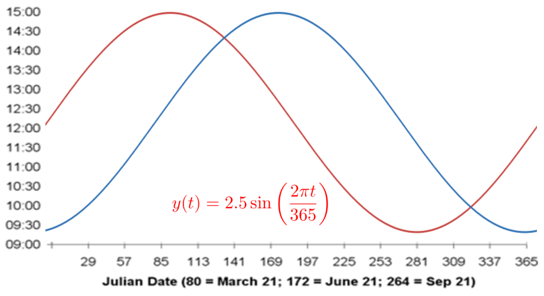
The red sine wave shows that at day \(1\) (January \(1\)) we have \(12\) hours of daylight, and immediately thereafter the number of hours of daylight increases. But we know that this actually happens at the spring equinox, March \(21\) or day \(80\text{.}\) For the red graph to coincide with the blue graph we need for it to shift to the right so that it shows \(12\) hours of daylight on day \(80\) and completes one cycle in the interval \([80, 445]\text{.}\)
To obtain the proper equation, we go back to basics. Our basic sine wave \(y=\sin(\theta)\) oscillates once for \(0\le\theta\le 2\pi\text{.}\) To get the proper period, we have
Let \(t=\frac{365\theta}{2\pi}+80\text{.}\) Solve this for \(\theta\) and use this to find a formula for the number of hours of daylight per day in Santa Barbara, CA on any given day with \(t=0\) representing January 1. Graph this and compare your graph with the original graph.
Problem6.1.16.
Suppose we have a sine wave whose amplitude is given by \(a\text{,}\) period is given by \(p\text{,}\) sinusoidal axis is given by \(y=b\text{,}\) and whose phase shift is given by \(s\text{.}\) Show that the equation of this wave is
Do you see that the cosine curve is basically the sine curve with a phase shift? What is the value of the phase shift? We usually restrict the phase shift to values between \(0\) and \(2\pi\text{.}\) Explain why this restriction is useful.
Subsection6.1.5Polar Coordinates
When we say that the coordinates of point \(P\) in the plane are \((x,y)\) we are referring to the Cartesian (or rectangular) coordinates. They are named in honor of René Descartes who, as we mentioned in Section 3.6, was one of the pioneers in applying algebra to geometry. The geometric picture that goes with this is shown below.
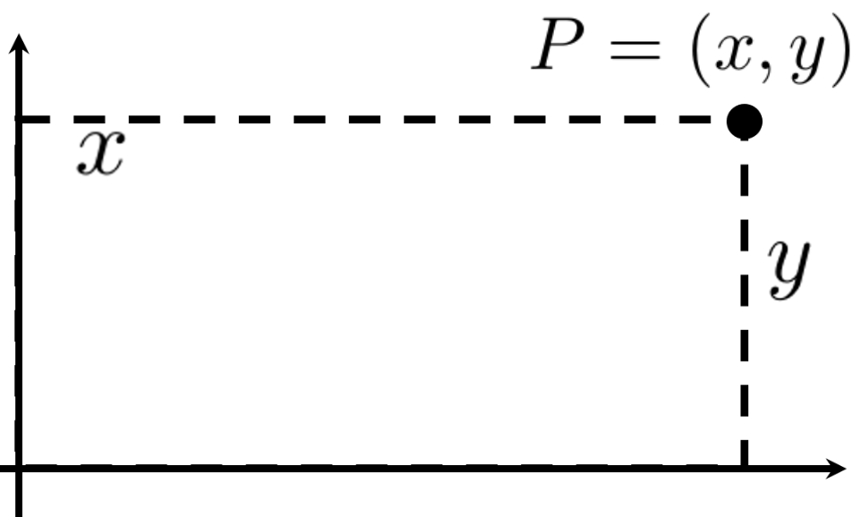
Using rectangular coordinates is one way to to translate geometry problems into algebra problems and vice versa. This simple idea changed forever how mathematics is done. Really.
But Cartesian coordinates are not the only way we can locate points in the plane. If we superimpose a right triangle on the diagram above, as shown below, we can find another way to locate \(P\text{.}\) Since \(P\) is the endpoint of the ray starting at the origin and ending at \(P\) the ordered pair of numbers \((r,\theta)\) works just as well as the ordered pair \((x,y)\text{.}\) The numbers \(r\) and \(\theta\) are called the polar coordinates of \(P\text{.}\)
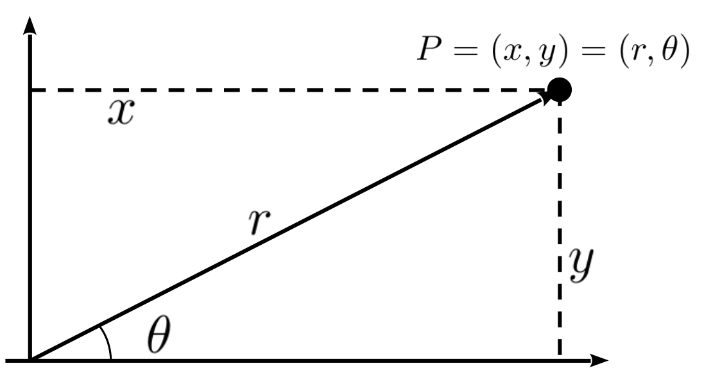
There are advantages and disadvantages to either coordinate system. For example the coordinates in the Cartesian system are unique. There is only one point with rectangular coordinates, \((3,4)\) (where \(x=3\) and \(y=4\)). This is not true of polar coordinates. The point with polar coordinates \((2, \pi)\) (where \(r=2\) and \(\theta=\pi\)) is the same as the point with polar coordinates \((2,-\pi)\) (where \(r=2\) and \(\theta=-\pi\)). It is also the same as the point with polar coordinates \((-2,\pi)\text{,}\) where \(r=-2\) (gasp!). The idea of a negative value for \(r\) is a little jarring because we usually think of the negative sign as denoting negative numbers. Instead, think of it as meaning “go the opposite direction.”
Drill6.1.19.
Explain why the polar coordinates \((r,\theta)\text{,}\)\((r,\theta +2\pi )\text{,}\)\((-r,\theta +\pi )\) all locate the same point in the plane. Find at least three other sets of polar coordinates that identify the same point. How many are there?
Drill6.1.20.
The following pairs of points are given in polar coordinates. Plot them all on the same set of axes and then check your answers using your favorite graphing software.
\((r,\theta)= (1, 0)\) and \((1, \pi)\)
\((r,\theta)= (2, \pi/4)\) and \((2, -\pi/4)\)
\((r,\theta)= (1, \pi/2)\) and \((1, 5\pi/2)\)
\((r,\theta)= (2, 7\pi/4)\) and \((2, -5\pi/4)\)
\((r,\theta)= (0, -\pi/2)\) and \((0, \pi/2)\)
\((r,\theta)= (1,\pi/3)\) and \((-1,\pi/3)\)
Problem6.1.21.
Of course, we’ll need to be able to translate from one coordinate system to the other.
(a)
Use the diagram above to show that if \(P=(r,\theta)\) in polar coordinates, and \(P=(x,y)\) in rectangular coordinates then,
\(x=r\cos(\theta)\text{,}\)
\(y=r\sin(\theta)\text{,}\)
\(\displaystyle \tan(\theta)=\frac{y}{x}.\)
(b)
In Cartesian coordinates the equation of a circle centered at the origin with radius \(a\gt 0\) is \(x^2+y^2=a^2\text{.}\) What is the equation of the same circle in polar coordinates?
Just like the Cartesian coordinates, the order of polar coordinates matters. The radius \(r\) comes first, and the angle \(\theta\) comes second. Notice that there is nothing in the ordered pair notation that tells you which system is in play. This will usually be clear from the context but if you are ever unsure whether the ordered pair \((a,b)\) represents Cartesian or polar coordinates ask your instructor.
Drill6.1.22.
Plot the points \((1, \pi/4)\) and \((2,3)\) twice. First assume that they are polar coordinates and then assume that they Cartesian coordinates.
Drill6.1.23.
The graph of an equation given in polar coordinates is quite different from one given in Cartesian coordinates. To get a sense of this, sketch the graph of each of the following functions in polar coordinates 4
Most graphing software has a built–in polar mode which will do this for you. This can be helpful once you are thoroughly familiar with the polar coordinate system but in the beginning you should do the graphing without the use of graphing software. Use technology to verify your graph after you’ve drawn it by hand.
.
\(\displaystyle r=\sin(\theta)\)
\(\displaystyle r=\cos(\theta)\)
\(\displaystyle r=\sin(2\theta)\)
\(\displaystyle r=\sin(3\theta)\)
\(\displaystyle r=1+\cos(\theta)\)
\(\displaystyle r=\sin(\theta)\cos(\theta)\)
\(\displaystyle r=1\)
\(\displaystyle \theta=\pi/4\)
\(\displaystyle r=\sin(\theta)+\cos(\theta)\)
\(\displaystyle r=\tan(\theta)\)
\(\displaystyle r=\sec(\theta)\)
\(\displaystyle r=\sin(\theta)-\cos(\theta)\)
An advantage of using polar coordinates is that the formula that describes a curve can be extraordinarily complicated if we give \(y\) as a function of \(x\) but extraordinarily simple if we give \(r\) as a function of \(\theta\text{.}\) For example, consider the following Spiral of Archimedes 5
In polar coordinates the Spiral of Archimedes is the graph of the equation \(r =\theta, \theta\ge 0\text{.}\) Convert this to an equation in Cartesian coordinates.